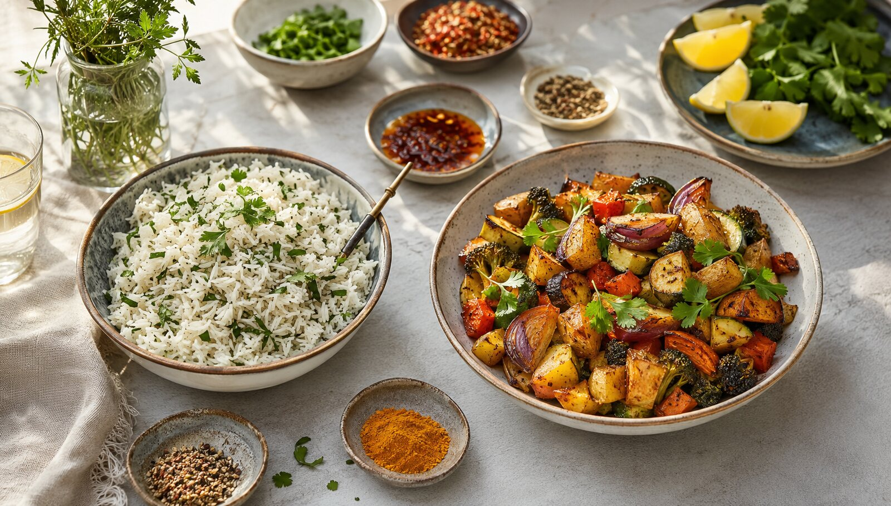

THE LONG READ
Recipe Journal
Twelve complete guides for understanding, choosing and using and adapting recipes.
 GUIDE 01 · 7 MIN
GUIDE 01 · 7 MINBuilding a Relaxed Table
A practical way to make everyday recipe feel calm, generous and welcoming.
 GUIDE 02 · 8 MIN
GUIDE 02 · 8 MINThe Fifteen-Minute Recipe Rhythm
A realistic system for quick recipes with flavour and balance.
 GUIDE 03 · 9 MIN
GUIDE 03 · 9 MINThe Shared-Plate Method
How to balance colour, texture, temperature and quantity for a table.
 GUIDE 04 · 10 MIN
GUIDE 04 · 10 MINA Seasonal Vegetarian Supper
A flexible framework for satisfying vegetable-led evening meals.

GUIDE 05 · 11 MINRelaxed Dining in Small Spaces
Thoughtful seating, serving and lighting ideas for compact rooms.
 GUIDE 06 · 7 MIN
GUIDE 06 · 7 MINCandlelight and Table Mood
Use warm light and natural materials without making recipe feel formal.
GUIDE 07 · 8 MINA Weeknight Menu Rhythm
Build dependable meals with one anchor, two sides and a bright finish.
GUIDE 08 · 9 MINHosting Without Pressure
A realistic preparation plan that keeps both host and guests comfortable.
GUIDE 09 · 10 MINSetting a Seasonal Table
Natural colour, produce and simple objects for a grounded table.
GUIDE 10 · 11 MINDesserts Made for Sharing
Easy finishing dishes that invite conversation and generous portions.
GUIDE 11 · 7 MINThoughtful Non-Alcoholic Drinks
Layer flavour with tea, herbs, citrus and gentle sweetness.
GUIDE 12 · 8 MINFrom Recipe to Tomorrow’s Lunch
Turn extra recipe components into useful next-day meals with less waste.